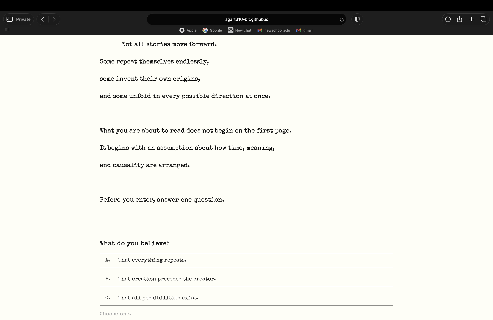
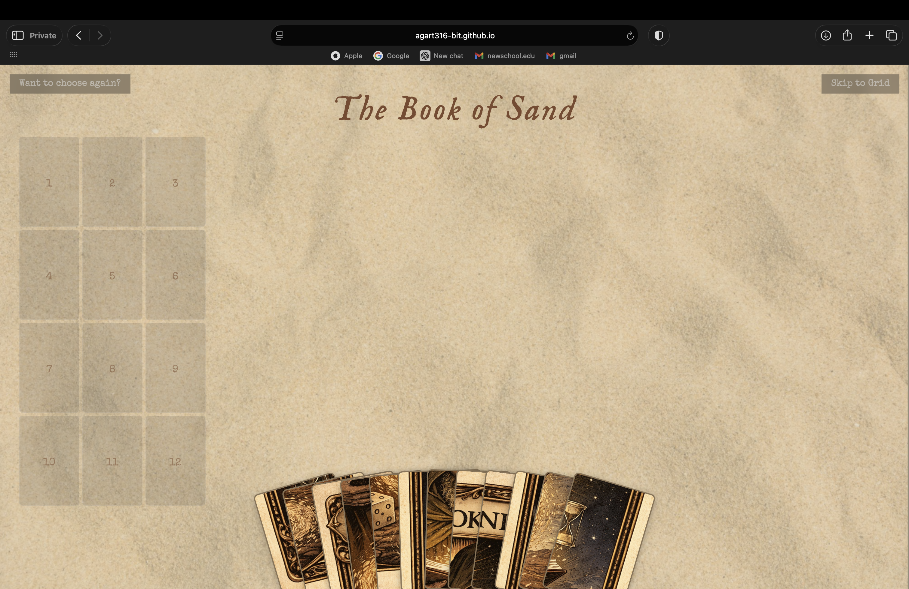
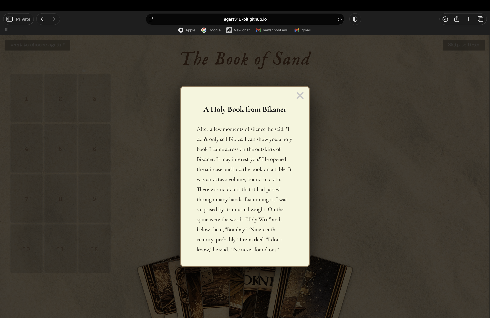
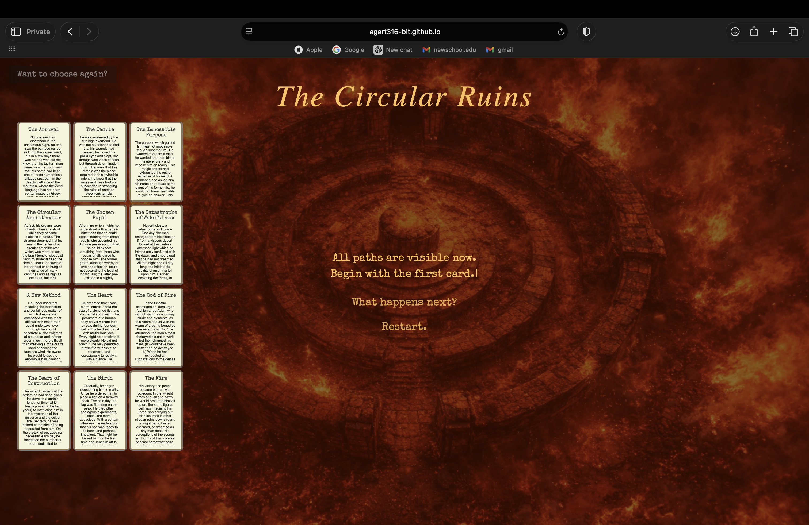
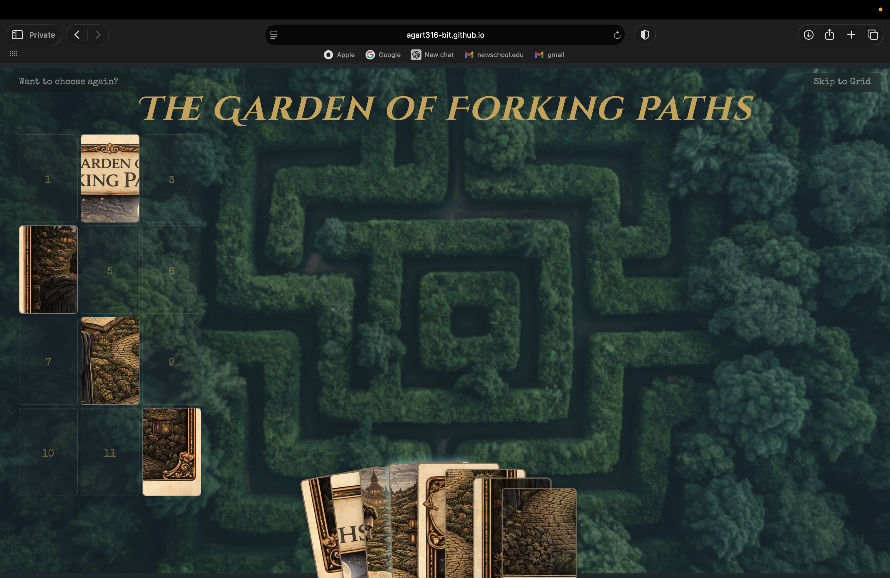
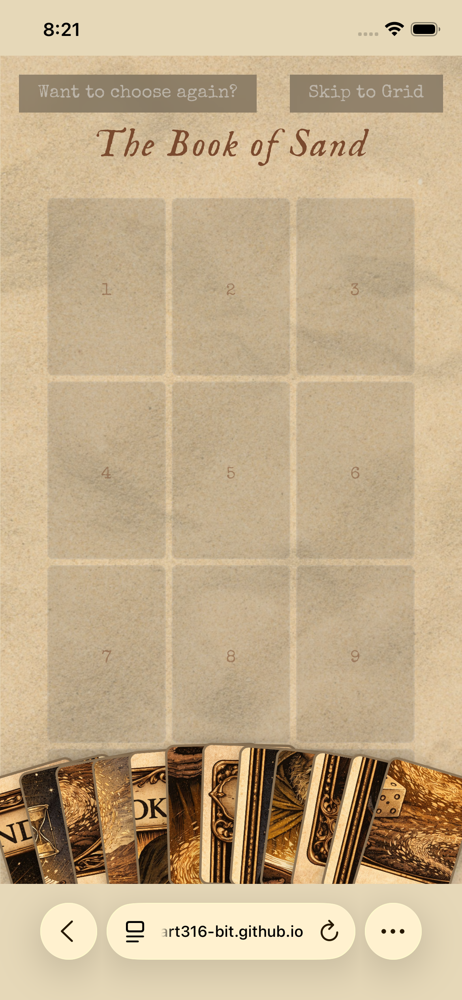
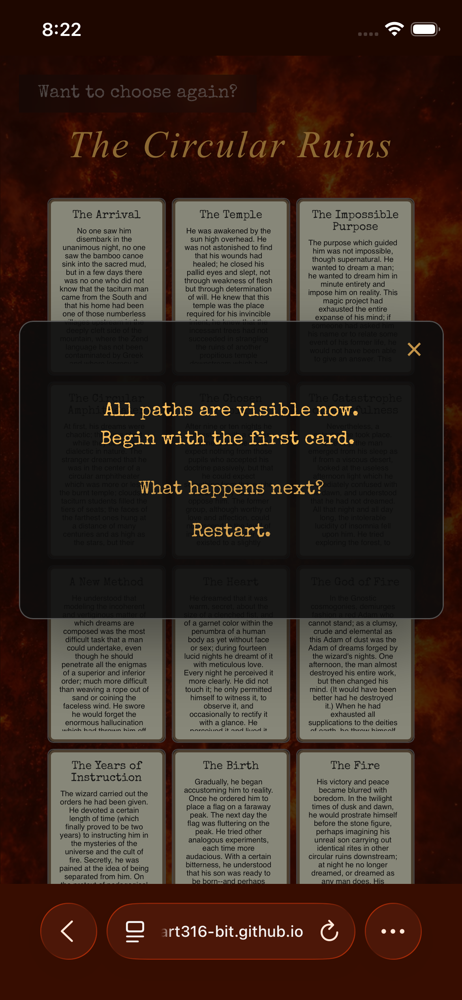

Web Design
Three Borges stories rebuilt as three websites, each interface designed to behave the way its story behaves.

The obvious move — illustrate the stories, wrap them in a scrolling e-book — would have made three pretty pages and adapted nothing. So the interface itself became the adaptation, and the entry screen asks one question before you read: what do you believe about how stories move. The three answers route to the three stories, which is how three unrelated worlds ended up sharing a single door.

Each story breaks a different rule of its own interface. The Book of Sand has no first or last page, so its card grid reassembles on every visit and no arrangement repeats. The Circular Ruins is about a dreamer who is himself dreamt, so the screen tears itself down and rebuilds as you navigate. The Garden of Forking Paths branches on selection — two readers never take the same route. None of it is decoration: each behaviour is a deliberate malfunction, tuned to feel tactile but slightly wrong.



Three worlds behaving this differently read as three separate projects unless something is unyielding, so every world is stripped to one monospace face, black on off-white — no colour, no imagery, no per-story logo. It shipped as a live site and all three stories read end to end on desktop and mobile. What I would change: the malfunctions are legible to a reader who already trusts the piece, and the Book of Sand grid loses everyone else. The first reassembly should announce itself.
In use
Each world holds its behaviour at phone width. The malfunctions had to survive a thumb, not just a cursor.


Credits — Stories by Jorge Luis Borges. Concept, design and build: Tanaya Agarwal.